O LEGADO
Game Design Document
"Ninguém escolhe o legado que herda — mas pode escolher o que faz com ele."
Mecânicas
1.1 — Sistema de Regras
O jogo é single player, com progressão linear em fase única ambientada na Era Medieval. O jogador possui uma barra de vida gradual — ao zerar, o jogador morre e reinicia a fase do início. Ao completar a fase, o jogador chega ao clímax narrativo.
1.2 — Ações e Comandos
| Ação | Tecla(s) | Sprite | Descrição |
|---|---|---|---|
| Andar | ← / → |
|
Move o personagem horizontalmente. Velocidade constante em solo. |
| Pular | ↑ |
|
Salto simples. Controle aéreo parcial enquanto no ar. |
| Atirar | Space |
|
Dispara projétil na direção voltada. Cooldown entre tiros. |
| Pausar | Shift | — | Pausa o jogo e exibe menu de pausa. |
| Idle | Automático |
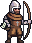 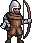 |
Animação de espera quando não há input do jogador. 5 frames. |
| Morte | Automático |
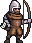 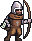 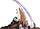 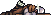 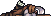 |
Ativada ao zerar a vida. 6 frames · one-shot. Exibe tela de morte após conclusão. |
1.3 — HUD (Heads-Up Display)
Mockup de posicionamento dos elementos do HUD durante o gameplay:


Mockup visual do HUD — posições dos elementos na tela (16:9)
Barra de Vida

Canto sup. esquerdo. Diminui ao receber dano. 7 estados visuais (v0–v7).
Barra de Energia (Stamina)

Abaixo da vida. Controla cooldown de disparo. 8 estados visuais (e1–e8). Consome 2 unidades por tiro.
Itens de Vida (p_advida)


Coletável de vida implementado (p_advida). Ao coletar: +5 de vida. Destrói o objeto ao toque.
Itens de Energia (p_aenergia)


Coletável de energia implementado (p_aenergia). Ao coletar: +25 de energia. Destrói o objeto ao toque.
Menu de Pausa
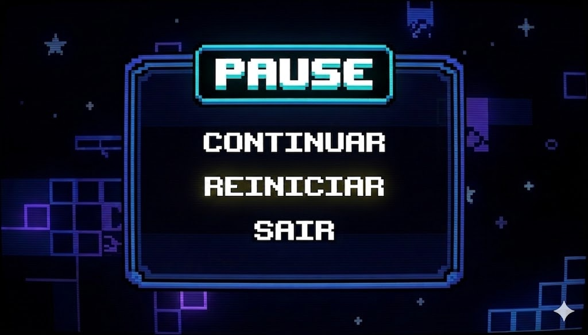
Totalmente implementado. Shift pausa o jogo (timescale=0). Cursor navega com ↑↓. Enter confirma ação (Iniciar / Sair).
Tela de Morte
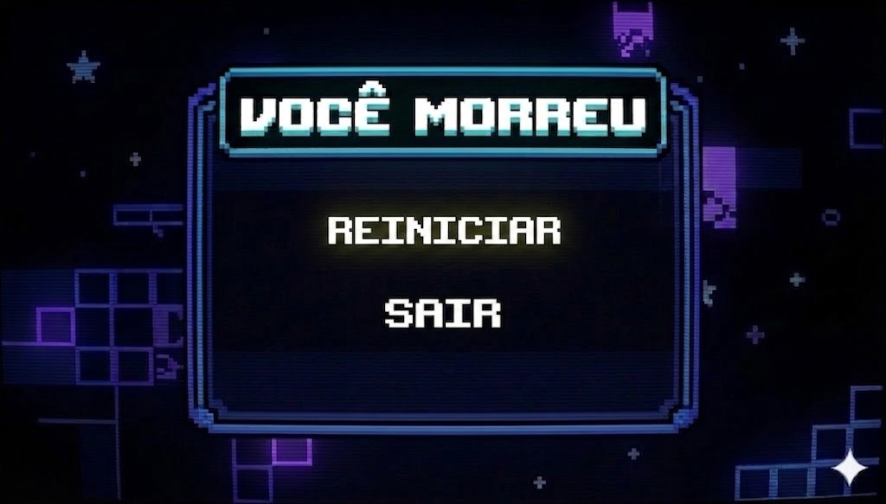
Exibida após animação de morte do personagem. Permite reiniciar a fase.
1.4 — Itens e Power Ups
| Item | Era | Imagem | Efeito | Status |
|---|---|---|---|---|
| Arco e Flecha | Fase única | Arma padrão do jogo. Tiro em linha reta, 1 dano. Consome 2 de energia por disparo. Cooldown de 0.5s. | Implementado | |
| Cura (p_advida) | Fase única | |
Restaura +5 de vida ao coletar. Destrói o objeto ao toque. | Implementado |
| Energia (p_aenergia) | Fase única | |
Restaura +25 de energia ao coletar. Necessário para continuar atirando. | Implementado |
| Escudo Temporário | Fase única | — | Absorve 1 golpe. Dura 5 segundos. | Previsto |
1.5 — Inteligência Artificial de NPCs
| Sprite | Nome | Era | Comportamento | Dano |
|---|---|---|---|---|

|
Guerreiro Medieval | Fase 1 | Patrulha horizontal. Ao detectar jogador (raio curto), avança e ataca corpo-a-corpo. | 1 ponto de dano |

|
Guerreiro Medieval 2 | Fase 1 | Variante do guerreiro medieval. Mesmo comportamento de patrulha e ataque corpo-a-corpo, visual diferenciado para variedade. | 1 ponto de dano | Fase 1 | Posição fixa ou patrulha lenta. Atira flechas a distância quando o jogador está no alcance de visão. | 1 ponto de dano |
|
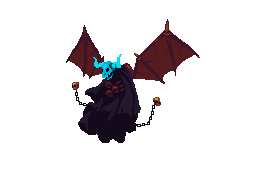 |
🔥 Demon — Boss Final | Fase única — Clímax | Chefe final do jogo. Entidade demoníaca manifestada. Possui 4 animações distintas: Idle (6 frames), DemonAttack corpo-a-corpo (18 frames), DemonAttackBreath/sopro de fogo (18 frames) e FireBall — projétil de fogo à distância (8 frames). Comportamento agressivo com múltiplos padrões de ataque. | Alto (a definir) |
* Sprite do arqueiro medieval baseado no asset GandalfHardcore Archer brown sheet.png. O jogo conta apenas com inimigos medievais. O Demon é o boss final — manifestação da entidade do pacto ancestral.

Spritesheet completo do Arqueiro Medieval (idle · andar · atirar · morte)
1.6 — Obstáculos e Elementos Interativos

Tileset base — plataformas de terra/grama, paredes de pedra, bordas
| Elemento | Fase(s) | Interação |
|---|---|---|
| Plataformas Fixas | Todas | Superfície de apoio. Jogador pode andar e pular sobre elas. |
| Buracos / Abismos | Fase única | Cair causa morte instantânea (barra de vida zerada, reinicia posição). |
| Portal / Checkpoint | Fase única | Marca ponto de carregamento ao fim da fase. Animação de entrada. |
| Porta / Passagem | Fase única | Abertura de áreas — ativada ao eliminar todos inimigos da sala ou ao encontrar a chave. |

Spritesheet do Portal de progressão entre fases
1.7 — Sistema de Saves
| Tipo | Quando | O que salva |
|---|---|---|
| Autosave | Ao completar cada fase (passar pelo portal final) | Era desbloqueada, última fase concluída, estatísticas |
| Save Manual | Não disponível durante a fase | — |
| Continue | Menu principal | Inicia na fase salva mais recente, com barra de vida cheia |
Narrativa
2.1 — Plot
"Um jovem soldado de uma família amaldiçoada luta para sobreviver às batalhas das Cruzadas — mas por trás da guerra há algo maior: o pacto ancestral que condenou sua linhagem, e a chance de quebrá-lo de uma vez por todas." — Sinopse de O Legado
A trama acompanha Aldric, jovem soldado das Cruzadas, condenado a lutar e morrer em batalhas que nunca escolheu. A maldição foi selada por um ancestral da família que firmou um pacto com uma entidade sombria em troca de sobrevivência — o preço: toda a linhagem futura seria arrastada para guerras eternas.
Aldric, sem saber da origem da maldição, deve sobreviver à batalha medieval, eliminar os guerreiros inimigos e alcançar o artefato místico escondido nas profundezas do campo de batalha — o único capaz de quebrar o ciclo de sua família.
2.2 — Ideia Controle (Moral da História)
Moral Central
"Ninguém escolhe o legado que herda — mas pode escolher o que faz com ele."
Arco emocional
Início: Aldric é resignado e preso ao ciclo de violência que herdou sem escolher.
Final: Aldric, ao completar sua jornada, tem pela primeira vez a possibilidade de quebrar o ciclo e libertar sua linhagem.
| Momento | Personagem | Estado emocional |
|---|---|---|
| Início | Aldric | Resignado — aceita o conflito como destino inevitável |
| Durante a batalha | Aldric | Determinado — luta para sobreviver e proteger sua linhagem |
| Clímax | Aldric | Revelação — descobre a verdade por trás do pacto ancestral |
| Final | Aldric | Escolha — pela primeira vez, tem a possibilidade de quebrar o ciclo |
2.3 — Ambiente do Jogo
Cenário: Florestas densas e campos de batalha das Cruzadas no Oriente Médio e Europa Central.
Conflito: As Guerras das Cruzadas — exércitos cristãos e sarracenos em batalha constante.
Tom visual: Verde musgo, marrom terra, cinza rocha. Iluminação quente de tocha.


Cenário: Vilas coloniais e campos de batalha com fumaça de pólvora.
Conflito: Guerras coloniais europeias — batalhas com mosquetes, canhões e estratégia de formação.
Tom visual: Bege gasto, vermelho sangue, cinza fumaça.

Cenário: Cidade em conflito urbano e laboratório secreto onde o artefato está guardado.
Conflito: Operação militar contemporânea — forças especiais, drones e tecnologia de ponta.
Tom visual: Cinza concreto, verde neon, laranja fogo.
2.4 — Incidente Incitante
O pacto selado nas Cruzadas é o evento que origina toda a trama:
"Em 1147, durante o cerco de Lisboa, um soldado chamado Aldric se viu cercado por inimigos, sem saída e sem esperança. Desesperado, ele invocou uma entidade das sombras — jurando entregar sua linhagem em troca de sobreviver à batalha. A entidade aceitou. Aldric sobreviveu. E desde então, cada filho de sua família nasceu destinado a lutar. Cada geração, uma guerra diferente. A mesma maldição." — Trecho da HQ Introdutória
2.5 — Fluxo Narrativo (Curva de Tensão)
Curva de tensão narrativa — eixo X = progressão, eixo Y = intensidade emocional
2.6 — Personagens

Aldric
Jovem soldado resignado que firmou (sem saber as consequências) o pacto que amaldiçoou a família. Hábil com arco e flecha, tem força bruta mas pouca compreensão do que está por vir.
Demon
A entidade do pacto ancestral finalmente toma forma física. Criatura demoníaca de grande porte que aguarda Aldric no final da fase. Possui ataque corpo-a-corpo, sopro de fogo e bola de fogo à distância.
A Entidade
Nunca aparece diretamente. Manifestada como forças do conflito, situações impossíveis de escapar, vozes nos momentos de desespero. Só revelada em fragmentos narrativos nas HQs.
Diagrama de Relações
Protagonista
ancestral
Antagonista
Estética
3.1 — Arte Visual
O jogo adota pixel art de alta legibilidade com camadas de parallax no background. Cada era possui uma paleta distinta que reforça o tom narrativo.
CAMADAS DE BACKGROUND — ERA MEDIEVAL
PALETA POR ERA
Era I — Medieval
3.2 — Animações do Personagem
Idle (parado)


5 frames · loop · respiração suave
Walk (andando)


8 frames · loop · ciclo de caminhada
Jump (pulando)


4 frames · one-shot · subida e queda
Atirar — Arco

Pose de ataque + projétil flecha
Spritesheet completo — Arqueiro Medieval
Todas as animações do arqueiro: idle · andar · atacar · morte
Inimigo — Idle


5 frames · loop
Inimigo — Walk


8 frames · loop · patrulha
Inimigo — Attack


6 frames · one-shot · ataque corpo-a-corpo
🔥 Demon — Idle
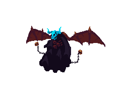
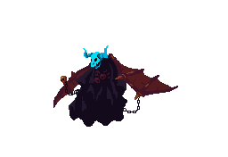
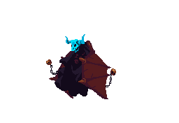
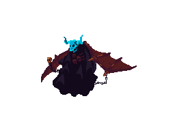
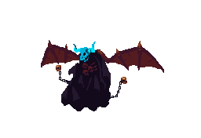
6 frames · loop · postura ameaçadora do boss
🔥 Demon — Attack
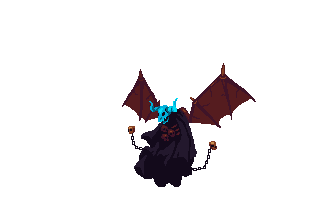
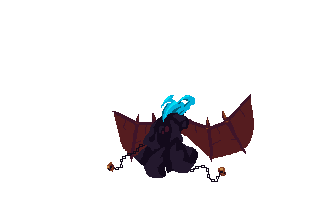
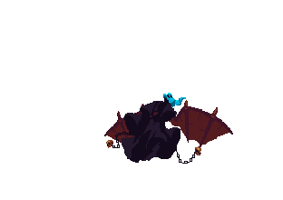

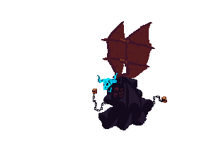
18 frames · one-shot · ataque corpo-a-corpo
🔥 Demon — Attack Breath (Sopro de Fogo)
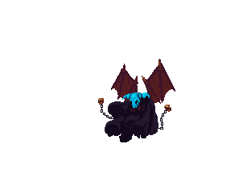
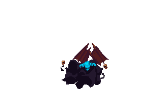
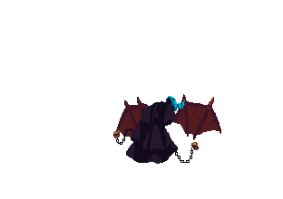
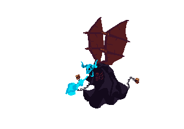
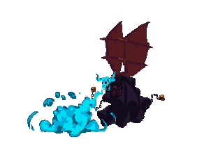
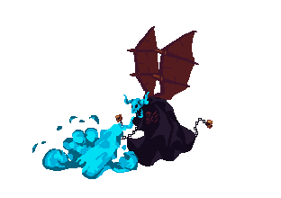
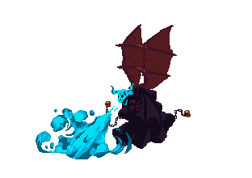
18 frames · one-shot · sopro de fogo a distância — segundo padrão de ataque do boss
🔥 Demon — FireBall
8 frames · loop · projétil de fogo — terceiro padrão de ataque, à distância
Spritesheet completo — Guerreiro Medieval

Todas as animações do guerreiro: idle · andar · atacar
Walk (andando) — 8 frames


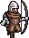
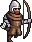
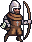
8 frames · loop · ciclo de caminhada completo
Death (morte do player)

6 frames · one-shot · ativada ao zerar vida
Portal — 10 frames


10 frames (portal0–portal9) · loop · efeito de brilho
Inimigo Guerreiro 2 — Idle


5 frames · loop · segunda variante de guerreiro
Spritesheet completo — Guerreiro Medieval 2

Segunda variante visual do guerreiro: idle (5) · andar (8) · atacar (6)
3.3 — Músicas e Efeitos Sonoros
| Era | Estilo Musical | Instrumentação | Tom |
|---|---|---|---|
| Era I — Medieval | Medieval / Orquestral | Alaúde, percussão de guerra (tambores pesados), flautas de madeira, coro épico | Solene, épico, com peso do destino |
| Evento | Arquivo | Status |
|---|---|---|
| Disparo — Arco | Arco.ogg / Arco e flecha.wav | Implementado |
| Flecha no alvo | Flecha_contato.ogg | Implementado |
| Passo na grama | Passo_grama_1.ogg | Implementado |
| Pulo na grama | Pulo_grama1.ogg | Implementado |
| Dano recebido (player) | dano_player.ogg / dano_player.m4a | Implementado |
| Dano no inimigo | dano_inimigo.ogg | Implementado |
| Morte do personagem | morte_personagem.ogg | Implementado |
| Ambiente florestal | ES_Wind, Vegetation, Leaves Rustling... (Epidemic Sound) | Implementado |
| Trilha de gameplay (fase) | GameplayMusic.wav / GameplayMusic2.wav | Implementado |
| Movimento genérico | movimento_1.ogg | Implementado |
Level Design
| Elemento | Descrição |
|---|---|
| 🟢 Spawn | Posição inicial — clareira à esquerda |
| 👾 Inimigos | 3 guerreiros medievais + 2 arqueiros (posição fixa) |
| 🚪 Checkpoint | Meio do nível — pedra mágica luminosa |
| 🏹 Coletável | 2 pacotes de flechas extras |
| 🌀 Portal | Final do mapa à direita — leva à arena do Demon (boss final) |
| ⚠️ Obstáculos | Fossas, plataformas de madeira, troncos |
Objetivo: Aldric deve atravessar a floresta, eliminar os guerreiros inimigos e alcançar o portal final, onde aguarda o confronto com o Demon — guardião do artefato e manifestação do pacto ancestral.
🔥 Demon
Sobre o Boss
O Demon é o chefe final de O Legado — a manifestação física da entidade com quem Aldric (ou seu ancestral) firmou o pacto. Ele guarda o artefato que pode quebrar a maldição da linhagem e aguarda o jogador no fim da fase.
| Animação | Frames | Descrição |
|---|---|---|
| Idle | 6 (idle1–idle6) | Postura de espera/ameaça enquanto aguarda o jogador se aproximar. |
| Demon Attack | 18 (frame1–frame18) | Ataque corpo-a-corpo direto — usado quando o jogador está próximo. |
| Demon Attack Breath | 18 (frame1–frame18) | Sopro de fogo a curta/média distância — segundo padrão de ataque. |
| FireBall | 8 (0–7) | Projétil de fogo lançado a longa distância — terceiro padrão de ataque, usado quando o jogador se mantém afastado. |
SONS DEDICADOS DO BOSS
| Evento | Arquivo |
|---|---|
| Música de batalha do boss | BossMusic.wav |
| Movimento/grito do Demon | Demon120.wav / Mvimento_boss.ogg |
| Dano recebido pelo Demon | DemonDamage.wav |
| Morte do Demon | DemonDeath.wav |
| Voo/deslocamento | Fly Demon.wav |
| Ataque de fogo (Breath/FireBall) | fire attack.wav |
Idle
Attack (corpo-a-corpo)


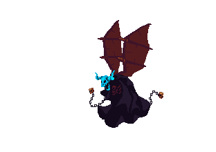
Attack Breath (sopro de fogo)
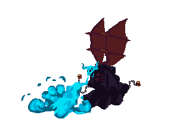
FireBall (projétil de fogo)
* Gatilhos de troca entre os 3 padrões de ataque (proximidade do jogador, vida restante do boss) e hitbox ainda a serem refinados nos event sheets.
Tecnologias
Engine
- Construct 2
(.capx / .caproj) - Event-based scripting
- Exportação para HTML5/Browser
Builds / Versões
- Gold 1.0.capx — versão de lançamento (atual)
- Beta 1.0.capx — versão anterior
- Alfa 3.0.capx — versão de testes
Assets & Arte
- Pixel art — PNG
- Sprites com image-rendering: pixelated
- Background parallax (5 camadas)
- Spritesheet de animação
Versionamento
- Git (repositório local)
- .gitignore configurado
- Branches por sprint/feature
Padrões de Nomenclatura
p_player— player spritep_inimigo— NPC/inimigop_tiro— projétilb_fundo— backgroundhud_*— elementos de HUDeHUD / ePrincipal— event sheets
Estrutura do Projeto (Construct 2)
| Pasta / Arquivo | Conteúdo |
|---|---|
Gold 1.0.capx | Build de lançamento — versão final do jogo |
Beta 1.0.capx | Build anterior — versão beta |
Alfa_3.0.capx | Build anterior — versão alfa 3.0 |
Animations/p_player/ | Frames do player: idle (5), walk (8), jump (4) |
Animations/p_inimigo/ | Frames do inimigo: idle (5), walk (8), att (6) |
Animations/menu_fundo/ | Background do menu principal |
Animations/menu_action/ | Botões de ação do menu: m_iniciar, m_sair |
Animations/m_pausefundo/ | Fundo do menu de pausa |
Portal/ | Animação do portal de transição: 10 frames (portal0–portal9) |
HudItens/Vida/ | Estados da barra de vida: v0, v2–v7 (7 estados) |
HudItens/Energia/ | Estados da barra de energia: e1–e8 (8 estados) |
Event sheets/ | Lógica do jogo — ePrincipal, eHUD, eInimigos, ePersonagem, eMenuPause |
Layouts/ | Cenas do jogo — MenuPause.xml, Sala de Teste.xml |
Textures/ | Backgrounds (b_fundo1–5), tileset (bbase), HUD (hud_*) |
Sprites/Inimigo Guerreiro 1/ | Spritesheet + frames separados do guerreiro 1: Idle, Walk, Attack |
Sprites/Inimigo Guerreiro 2/ | Segunda variante de guerreiro: Idle, Walk, Attack |
Sprites/Personagem/Death/ | Animação de morte do player: d0–d5 (6 frames) |
Sprites/Fundo/ | menu_pausa.png, menu_morte.jpeg |
Sounds/Movimento/ | Passo_grama_1, Pulo_grama1, dano_player, dano_inimigo, morte_personagem |
Sounds/Tiro/ | Arco.ogg, Arco e flecha.wav, Flecha_contato.ogg |
Sounds/Natureza/ | Vento e folhas — ambiente florestal (Epidemic Sound) |
ArquivosSuporte/ | High Concept (PDF), Base Narrativa (DOCX), Entregas (PDF/DOCX) |
Referências
🎮 Jogos
- Castlevania — platformer de ação, progressão linear
- Metal Slug — run & gun 2D pixel art, inimigos variados
- Contra — mecânica de tiro horizontal, dificuldade progressiva
- Cuphead — arte pixel art temática, boss fights dramáticos
📖 Referências Narrativas
- Assassin's Creed — viagem entre eras históricas, memória ancestral
- Bloodborne — maldição familiar, tom sombrio, ciclo inescapável
- Disco Elysium — peso das escolhas passadas sobre o presente
- The Banner Saga — herança de guerras, sacrifício geracional
🏛️ Referências Históricas
- Cruzadas (Séc. XII) — Cerco de Lisboa 1147, cavaleiros e sarracenos
- Cruzadas (Séc. XII) — cercos medievais, cavalaria, formações de batalha
📄 Documentos do Projeto
- High Concept — O Legado (PDF)
- Base Narrativa — O Legado (DOCX)
- Modelo GDD Entrega 26/04 (DOCX)
- README.md — repositório
"Das flechas medievais às balas modernas — O Legado é a história de uma família que nunca teve escolha, até agora." — High Concept, O Legado